29.19%
Is the median of the total amount of information on the analyzed pages (average of 29.29%).
This is a research project I've been working on for the last four years. The focus was on understanding the core pillars that constitute a web page. This understanding would eventually pave the way for creating an algorithm for webpage and flow generation via AI training. Along the way, I've discovered some content design behaviors and developed new methods that enhance designers' comprehension of element placement and content strategy.
This is the first part of a large set of findings from 5 tests conducted from 2022 to 2025. This case focuses on results that address element placement and the development of a universal design-development taxonomy, enabling web templates that facilitate discovery research and speed it up.
The second part of this research can be found at this link or by navigating to the home page and clicking on the project "Cognitive Load Influence on Page Navigation."
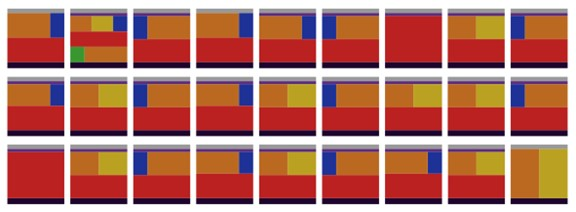For this project, I worked with a base definition, an axiom, that we will use throughout the entire study. It's important to have this definition made very early in the conversation, so all the knots are tied to this truth.
We will define a webpage as a visual structure that is designed from a combination of two pillars:
These pillars sustain the entire structure of a webpage and guide designers, developers, and product people in making decisions when building these solutions. One way of seeing this is by analyzing the product phases that happen when developing a digital solution:
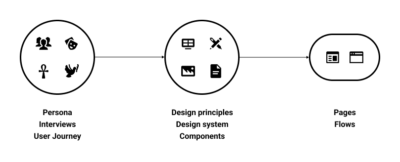To understand users and build a solution tailored to their needs, we need to conduct rounds of interviews, build artifacts, create personas, and narrate a story that integrates the product into these people's everyday lives. You can't talk about your audience without understanding their culture and how the product will impact their routine. Only after that can the team start incorporating company goals and elements to make the product appear a certain way. This is where design principles and a design system are really important for content to reach the target audience.
Only with the right combination of the user’s demographics and content that makes sense will the product succeed.
Let's look back at our axiom. We define a web page as a combination of content and culture. As part of the process, we want to better understand what makes people navigate the way they navigate, how they decide what to look on a page, what is interesting, what help them find the information they're looking for; because this is the part that AI generated pages fail when exposed to users: they look good, but there's no appeal outside of the visual layer, its a copy of many other websites available online. It doesn't take into account what that specific group of users needs to achieve their goals with the product.
The first step was understanding what could be collected, given the levels of variation, consistency, and availability, in line with the two pillars we defined. Overall, it's easier to map the aspects surrounding a web page's visual elements: the elements usually follow a set of rules for positioning and color, or they're part of a large design system that dictates the overall look and feel of the entire experience. The complex part was to normalize aspects related to culture and demographics, given the amount of variation, even when small tweaks are made within a given group. 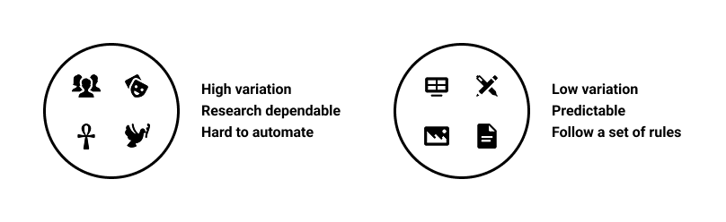
Users' demographics and culture are a highly volatile pillar and depend on a variety of factors, such as differences in regions, languages, beliefs, etc., so they require substantial research to understand and apply to product development. This makes it hard to predict. In this research, we will treat this pillar as a constant in our investigations. For each test, we will provide a set of pre-selected demographic information to be considered when testing specific websites.
On the other hand, the graphic elements and the overall content follow a set of rules, becoming more predictable and generating less variation. These elements were key to the first 3 tests we ran, during which we fully understood global positioning and information distribution using the methods developed throughout this project.
With these considerations, I had two questions in mind that I wanted to understand with this research:
We conducted two rounds of testing on this subject, with the second an enhanced version of the first, featuring refined rules and guidelines.
In the first test, our main objective was to understand how to classify the elements within a page, their visual properties, and their relative positions on the screen. Our sample was formed by the following:
First test guidelines
31 pages from some of the most used websites in Brazil
5 types of pages were analyzed:
6 types of content were analyzed:
Our method of selecting and classifying the information was to use colored blocks over the screenshot of the page. Each block has the color of its respective element; the possible classifications were:
Note that this list does not cover all possible elements; this will be addressed in the second round of testing.
To measure how much of the page that element represents, we collect the width and height of the block and compare the area of the block with the area of the full page. Using this to calculate the area of all blocks, we can also find the amount of information on the page, considering “information” as everything that is not a blank space.
Using this method, we created a set of images with colored blocks on top, like this:
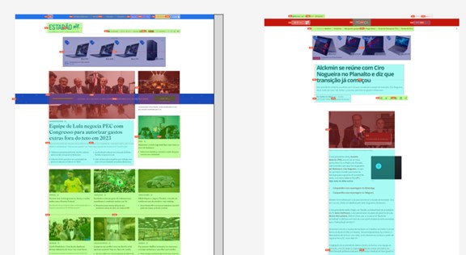Some considerations about how we approached this first round of classification:
All the collected data was then organized into spreadsheets, and we analyzed it.
In short, there wasn't much solid information gathered that could already answer any of our research questions. But, throughout this test, we learned a lot about what to do, and most importantly, what NOT to do. This gave us motivation to build a second test that would be more organized and objective. As for this test, this is a list of lessons learned we gathered along the way:
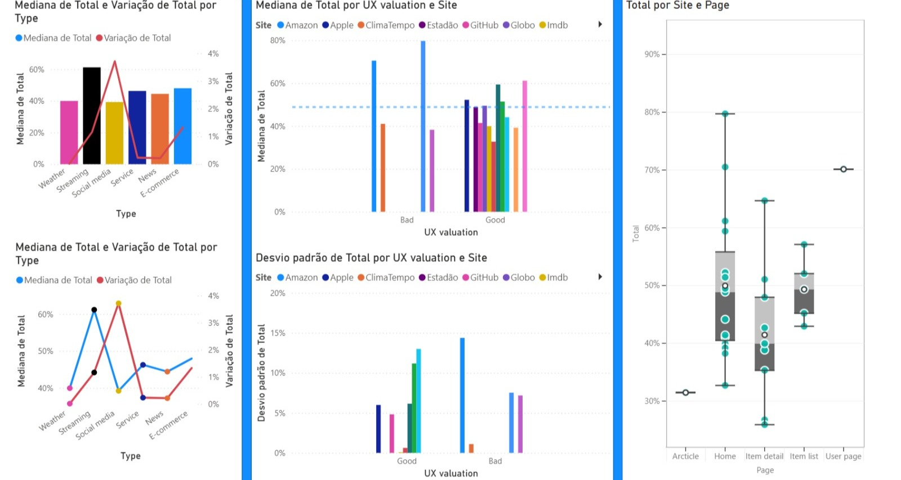At this point, we realized that to answer the research questions, we needed to refine our method and improve our data collection. We separated the next steps into three main categories:
As a result of the extensive manual work necessary in the first test, when analyzing ways of doing the second one, the first approach that we tried was to use web crawlers to get element names, positioning and other usefull information that could be collected, but, after many attempts, this is what we found:
There is another major problem: pages can vary widely in size. What that means is that it is hard to compare and classify elements across different screens because of their size differences. For instance, you can compare two "Item detail" pages from the same e-commerce site and have completely different results based on the volume of information provided for each product, so even if the page has the same general structure, with most of the elements being the same, you could not locate the position of an element inside them.
We had to rethink our approach, leading to the development of a new classification methodology. The first step was to update our mind model for elements on the screen. Two visual elements can have the same form but serve a different function, and vice versa. While a visual element can perform a specific function by itself, it can still be part of a larger group (component) that gives it a different purpose.
So, to encapsulate all the possible behaviors of a specific element, we decided to classify elements into three categories: form, function, and component.
Note that this list may not include all possible classification outcomes, but these were the ones we needed throughout this research. There may be a need for new classifications for different pages.
Let's deep-dive into the other part of the problem, accurately map the elements inside the page. The biggest barrier is page size variation, which makes it hard to point to the same element across similar pages because their content varies.
For example, let’s compare the same type of page between two different websites. For this, we will look at two store platforms that sell the same type of product, so we have the minimum possible variation. Let’s compare the Item Detail pages for Dell Technologies and Lenovo:
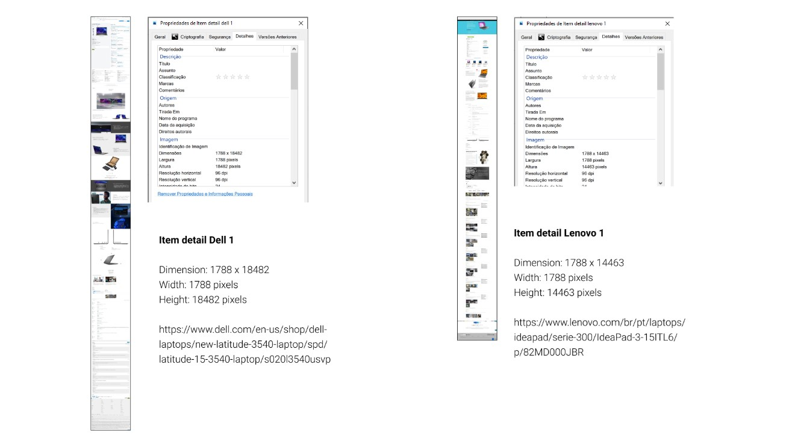As shown in the image, even though the pages are the same type (Item detail), display the same product category (laptops), and are targeted to the same persona (people looking for an all-purpose laptop), their sizes can vary. One valid counterargument is how each brand presents its content: one page has more images than the other. To further minimize possible variation, let's check what happens if we investigate the same page (Item Detail) on a single website (Dell Technologies) with two similar products (laptops).
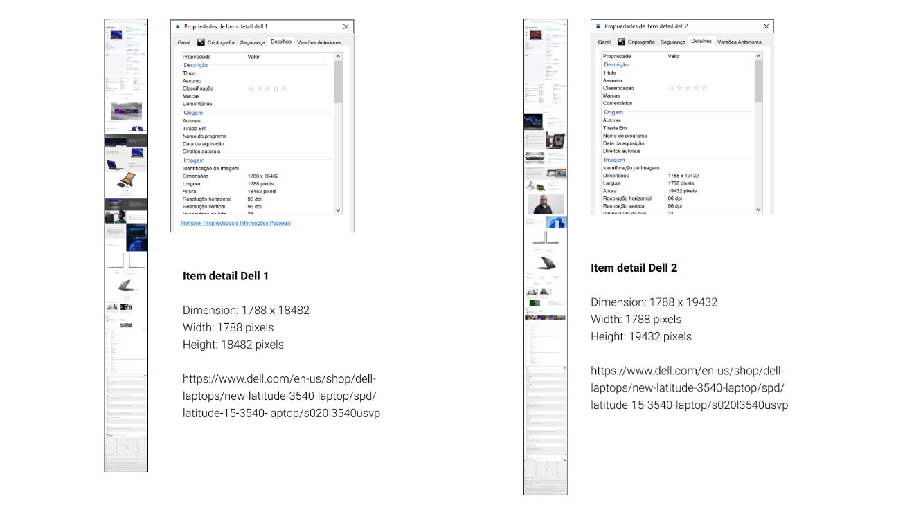As expected, there is still a difference. Smaller, but still present. This makes comparing these pages difficult, as specific sections are at different heights.
A solution to this problem is to have a uniform categorization of page sections, organized so we can build a summarized view of the same size across all templates. We will build that through a series of template section definitions.
The header is the top portion of the page, consisting of a combination, but not exclusively, of the following elements:
Headers usually have a visual delimitation, represented by a line, shadow, or color difference. In code, it represents the entire area inside the <header> section.
Bellow, are examples of headers:
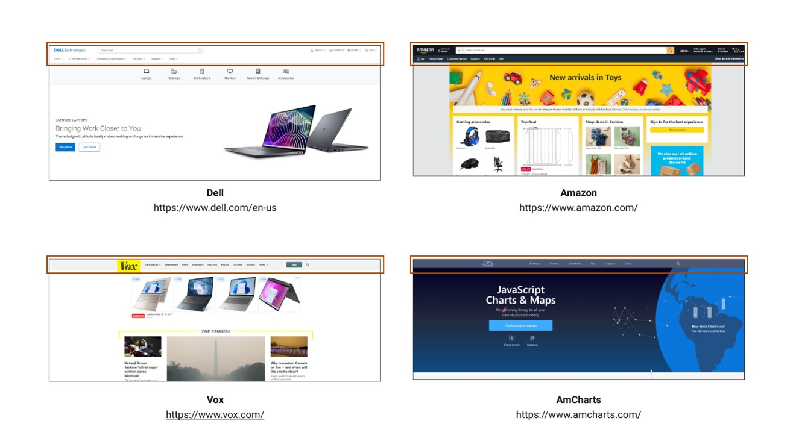Subheaders represent the portion of the page between the header and the main content (body). It's called a subheader because it’s usually an extension of the header's capabilities and, often, has the same type of elements on it.
Some new elements that we will consider part of the subheader for this definition are:
Note that not all webpages have subheaders, but given their frequency during the tests for this project, we concluded it was important to formally define them.
Bellow, are examples of subheaders:
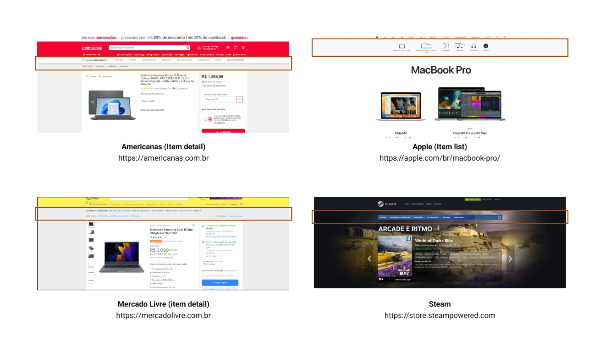The footer is the bottom portion of the page, consisting, but not exclusively, of the following elements:
Usually, the footer section is the same across the entire website and features visual elements that set it apart from the content above, such as line dividers or color changes.
In code, the footer is identified by the <footer> section.
Bellow, are examples of footers:
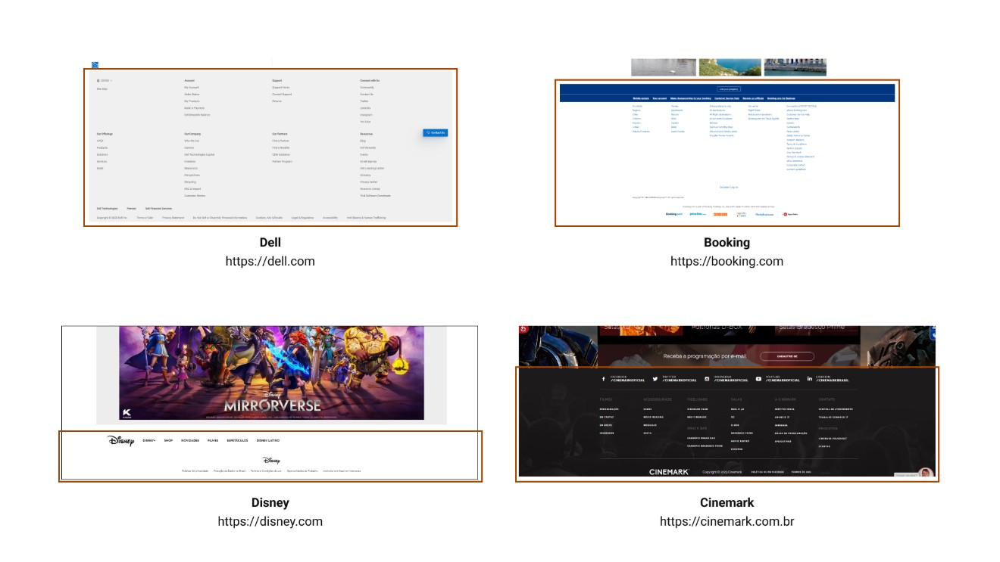Overlays are all the structural elements that are positioned above the main page. The word "above" in this case refers to the z-axis of the page (even though webpages are 2D, the CSS property z-index allows elements to be positioned above others when their values are greater than 0).
These elements don’t have a fixed position on the page's overall plane, but can be identified both visually and by code.
Note: since overlays don’t have a fixed position and can appear anywhere on a page, this session will not be included in the template. Its definition helps when mapping elements on screen, but doesn’t aggregate with the overall page structure.
Bellow, are examples of overlays:
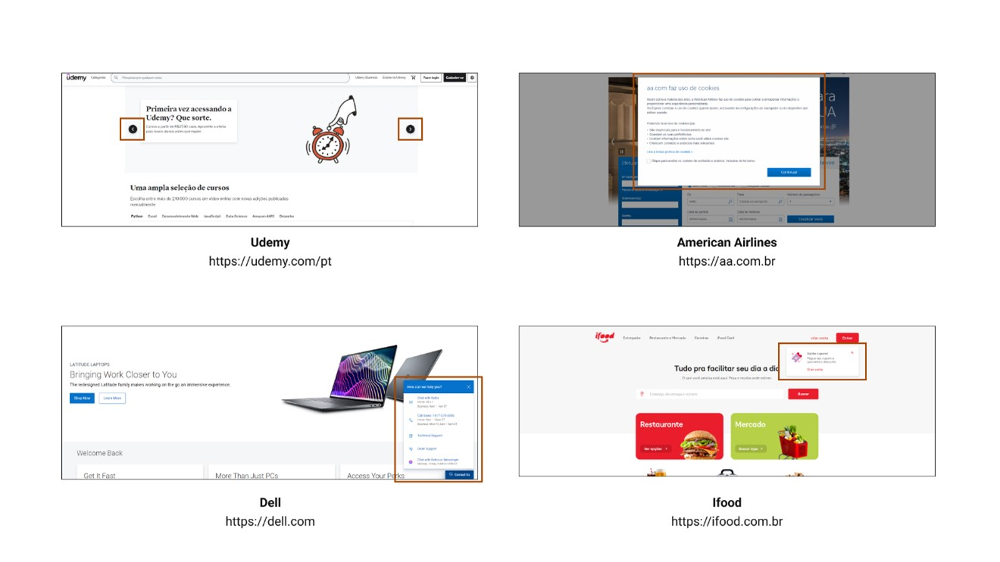So far, all the sections follow the exact same structure and classification of HTML because these areas are clearly recognizable and occupy a limited space. Now we will start defining the structures within the body of the page, which will allow easier localization independent of page length.
A column represents a portion of the same content inside the <body> section. Horizontally, a column can occupy between 20 and 100 percent of the <body> content, while vertically, it can occupy between 1 and 100 percent of the <body> content.
A column is delimited by the type of content that is displayed inside of it, but some visual cues can also be used to enhance column separation. For example:
Bellow, are examples of columns:
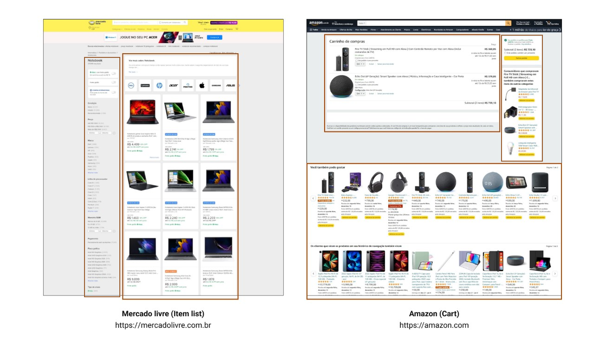Note: Pages can have multiple columns, both side-by-side and stacked. To identify which column has been referenced, nomenclature is necessary.
A column can be identified by the notation:
Column X
Where X represents a number between 0 and 5.
According to a previous definition, a column can occupy between 20 and 100 percent of the horizontal space of the page, so the numbers {1, 2, 3, 4, 5} represent the horizontal order (left to right) of alignment of the columns on a given section.
Whenever the section is filled with a single column, the number 0 should be used to represent the given column.
A panel is a column with a width less than 20 percent of the total page width. Will consider only the columns that are the very first or very last in the section. Sections that contain only one column automatically can’t be considered a panel, given the definition of a column 0.
A menu is a panel that contains Links as its main element (at least 50% of its elements).
Panels and menus can be identified by the notation:
Y Panel, Z menu
Where Y and Z represent the direction (left or right) of the page on which it is located.
Note: The distinction between Panels and Menus was made to better identify the distribution of elements within them. For the purpose of template construction, they are the same.
Bellow, are examples of the nomenclature:
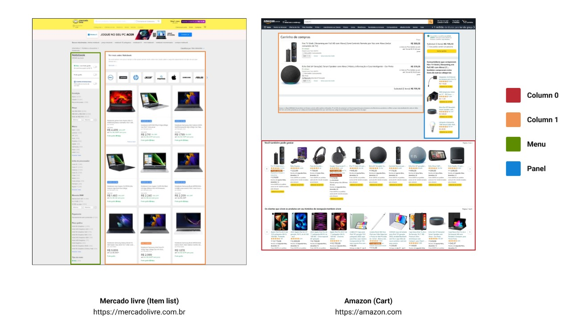With these new definitions at hand, we ran a second test. The data collection worked very similarly to before; we classified the information blocks by hand, but this time with much more detail:
Page; template; function; form; component; width; height
This allows us to classify every element into each of the previously defined concepts.
Note: For the second test, we changed the tool we used to organize the scrape. On the first, it was Figma; on the second, Adobe XD. This decision was made because Figma resizes images that are too large, while Adobe XD imports them as they are, so we can make a fair comparison, given that all pages would have at least the same base width. Another advantage was that Adobe XD has a plugin that extracts layer titles as a JSON file, and text layers are named the same as their content, making it easier to move the collected information to Excel after finishing the scraping.
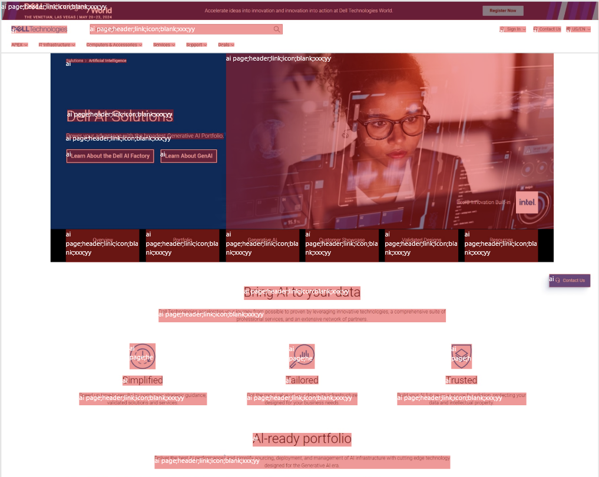We also decided to be more concise in selecting the pages we would experiment with this time. We selected 10 e-commerce/store pages and mapped 3 page types across all of them. The flow and content type were also the same in all of them: “purchase flow with 2 items added to the cart”.
This gives a total of 30 separated pages analyzed.
The process for organizing and summarizing the data in Excel was similar to what was done on the first test; the main difference was that instead of using separate tables to calculate clusters of information, everything was done in one Consolidation page using multiple formulas.
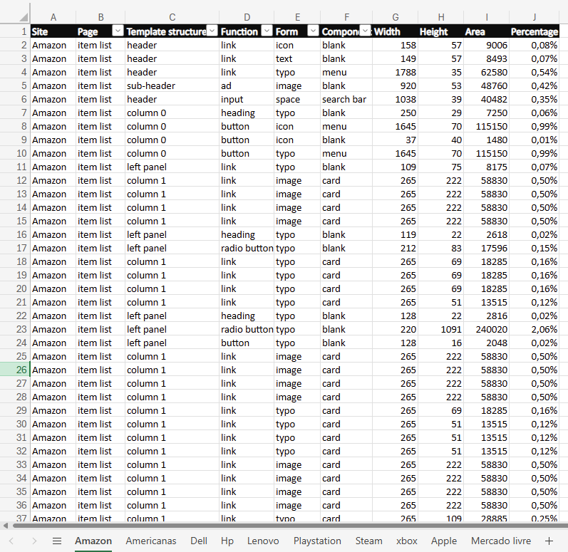One thing worth noting is that, given the nature and method used in the second test, there were many more lines in each table, and the individual values for each visual element on screen were smaller, providing greater confidence in the results.
Now, for the results, let's take a look at what we found when analyzing the amount of information across all pages and how that translated to each page type.
Is the median of the total amount of information on the analyzed pages (average of 29.29%).
Is the variation in the total amount of information on the analyzed pages.
Is the standard deviation of the total amount of information on the analyzed pages.
Is how much of the information had the Form Typo.
Is the combination of the functions Illustrations, links, and plain text.
Below we have a chart for Form x Function distribution within elements:

Now, before getting into the details of the distribution by page type, I want to show the discoveries we made using the taxonomy we defined previously.
My initial hypothesis was that, by following this categorization, we would better understand the structure of each page type. In a way, my end objective was to see if it was possible to summarize the page types enough to build a set of templates that encapsulate how that type of page will most likely look.
I have already discussed throughout this arcticle that the biggest challenge in standardization was page-size variation. So, to eliminate this problem, I defined a new metric that makes page comparisons more fair; we call this technique Template Summarization.
From now on, we will reference templates a lot and how we worked on them. For the sake of standardization, we will define a template as an alternative version of a webpage composed only of blocks of its segmented sections (header, sub-header, footer, columns, panels, and menus). Below is a template example:
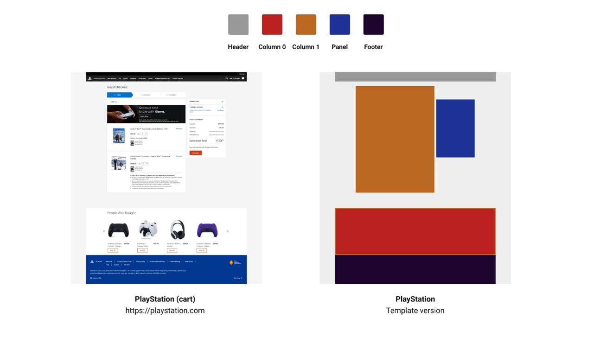Below is a technique for simplifying these components into a compact view:
A summarized template is a visualization of the template sections clustered (without blank spacing) inside a 24:25 rectangle.
We can now apply this method to the previous template:
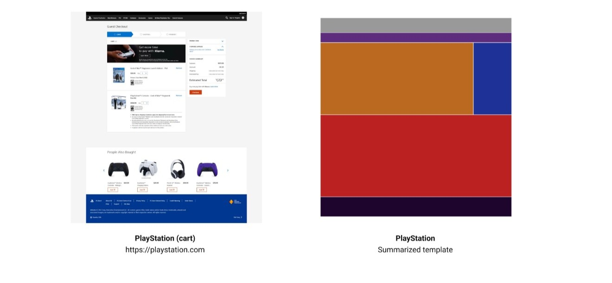With summarized templates, we can now compare pages that differ in content but share a similar structure. Look at this example comparing three item detail pages from different websites (Amazon, Americanas, and Dell):
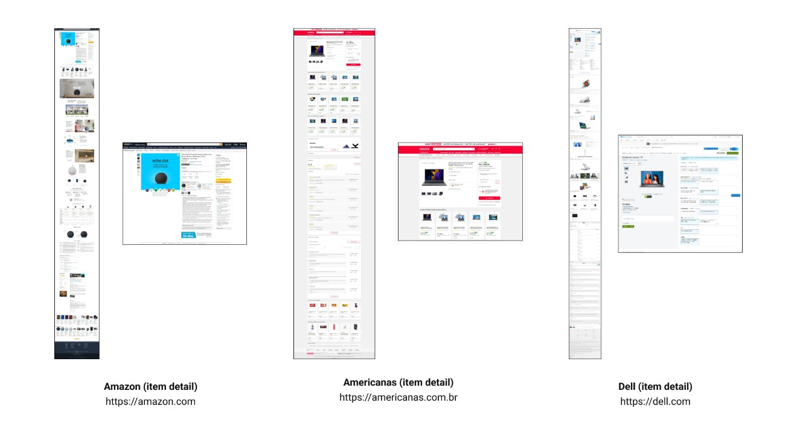We can see significant variation in size, content, and placement across pages, even though they serve the same function. But let's compare their summarized templates:
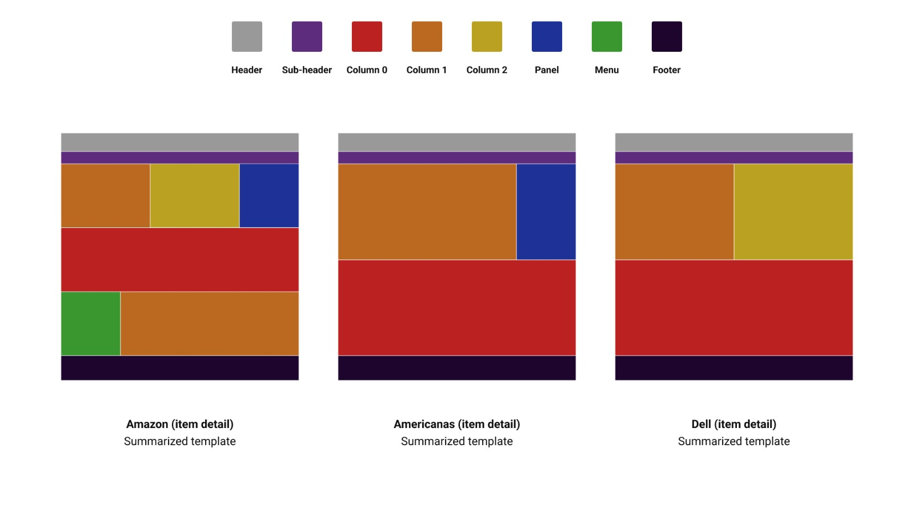As we can see in the image, even though the pages are considerably different in their original format, the summarized template shows some similar elements between them. More than the basic structure, a section with one column and a variation between a second column, a panel, or both, and a section with a single column. Structurally, the Amazon page is the most different, having a third content section with a menu and a column.
This is a simple visual analysis done by just looking and comparing the structures of these summarized templates, but what if we did the same comparison across multiple pages at a time? What if we compared all pages of a specific type? Would they have an overall similar summarized template?
In order to do that, I've built this process:
In the generated version, it will be possible to see variation lines from different templates; the stronger the line, the more the structure is repeated across the pages.
We can then mark these variations, as in the example below, using the method with item detail pages from study 2:
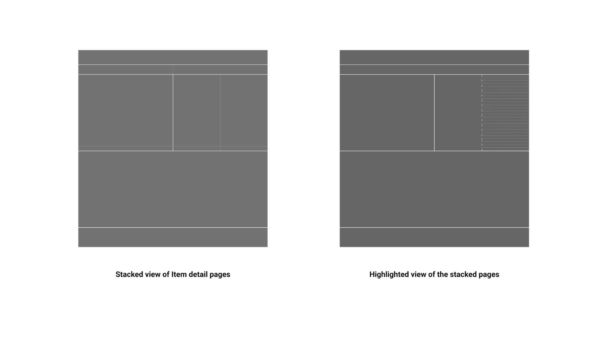
The result of highlighting the variations is what we call the
Finally, we can define our last concept: the
Since the overlap occurred between a second column and a panel on the right, the two summarized template types that best represent this type of page are the ones above.
Repeating the process for the item list pages, we had a surprise: all pages had the exact same summarized template, so when overlapped, there was no variation, creating only one instance. This is mostly because of the type of website we were studying; in general, e-commerce and store sites tend to use the same structure for their item list pages, and we were just surprised when all of them used the exact same one.
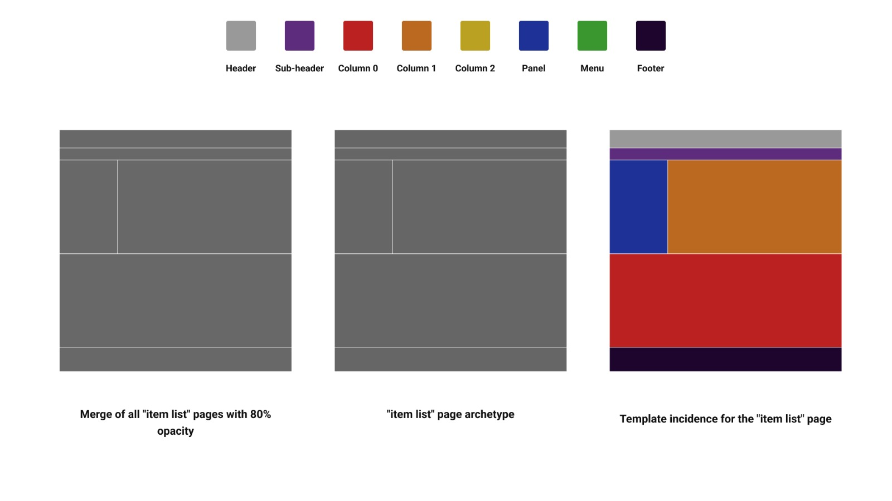The cart page had the most variation. In total, there were 4 incidences in our sample, stemming from the overall structure of the top half of the page: the presence or absence of a subheader and the number of panels/columns per page.
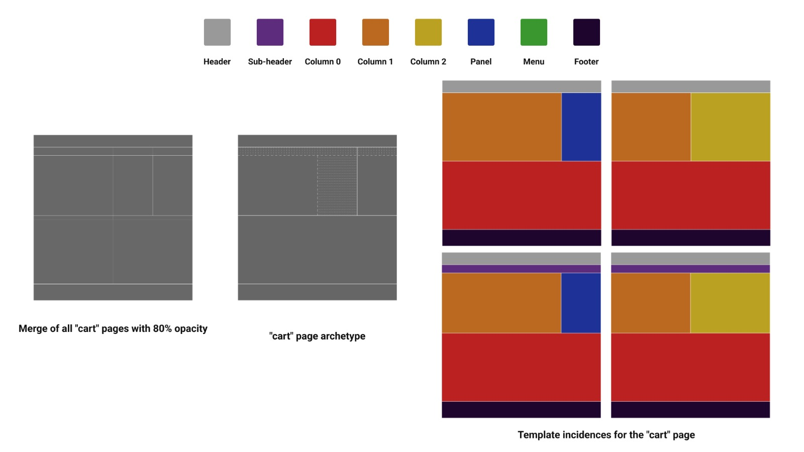Now, let's use these templates to see how the elements are distributed in each page type. Starting with the item list page:
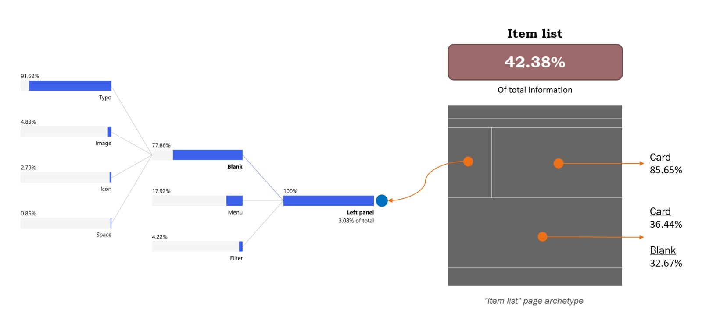The most interesting fact we found while analyzing the data is that this set of pages accounts for 42.38% of all the information collected, making it the most overloaded page and suggesting that the information distribution is quite unequal across pages.
Looking through the different sections, we find that the top column is mostly filled with cards (85.65%), while the bottom column is split between cards (36.44%) and non-component elements (32.67%). On the left panel, where we expect to see links, buttons, and filters, we see that 77.86% of the information is not part of a component, and of it, 91.52% comes from the form typo.
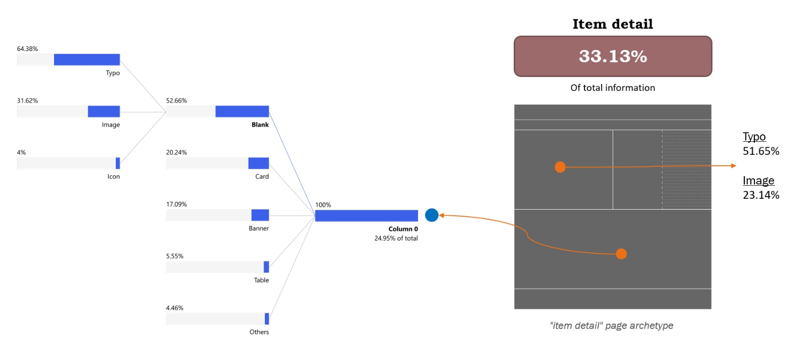Analyzing the item detail page, the first thing worth noting is that it accounts for 33.13% of the total information collected, making it well-balanced compared to the other two pages.
Looking through the template sections, we were surprised to discover that the column on the left-hand side of the top of the page has more text elements than images, since this is where we usually display pictures of the item. The typo form accounts for 51.65% of the information in that space, while images account for 23.14%. The column on the second half of the template shows that 52.66% of its elements are non-components, 20.24% are cards, 17.09% are banners, 5.55% are tables, and the rest is a mixture of other elements. It’s worth mentioning that the non-component elements are divided into 64.38% as typos, 31.62% as images, and 4% as icons.
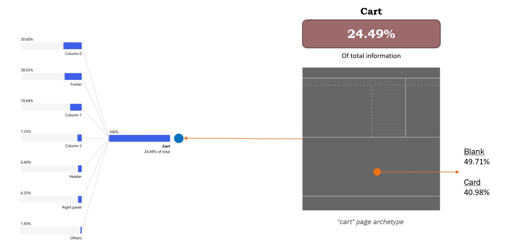The last page analyzed was the cart page. As shown in the image, this page accounts for 24.49% of the total information, making it the emptiest of the three (with more white space).
Across the template's sections, the bottom column is divided almost equally between two types of elements: 49.71% non-component elements and 40.98% cards. For the whole page, the information is spread between many different elements, but one interesting fact is seeing how much influence the footer we have here has. One of the websites studied has a long footer, and since this page has the least information, the footer accounted for a large portion of it, bringing the total for this template to 28.03% of the information.
By the end of the second study, this was the question I had in mind most. Even though the test was good and we were able to validate many of our original hypotheses, to fully confirm it and establish a structured method, we would need a way to speed up the categorization process.
The second test took months to complete. All categorization, data organization, analysis, etc., was done by my colleague Leonardo Souza, who was my product designer intern at the time, and me.
My approach was to start looking for ways to develop a classification model that we could train on our hand-made examples, which would accelerate our tagging of Form, Function, and Components. Unfortunately, that proved to be a lot more complicated than I anticipated, and here are the reasons:
These were discoveries I made while trying to do a third study. This one was smaller, a benchmark for my team, comparing a specific type of page with its competitors, but using the method we created to evaluate the pages and the overall amount of information.
While searching for models to test, I found Darwing V7, which uses YOLO as a base model for image recognition. Their UI kit is robust and helps a lot with classifying large batches of images, but, as mentioned, since my images required multiple selections with many tags per box, the work required to finalize the classification using Darwing was similar to what we did without a UI kit.
One thing that was different from previous tests was that now we had the coordinates of each selection box, so for each element, the extracted metadata looked like this:
Form; Function; Component; Template taxonomy; Width; Height; Position X; Position Y
where X and Y corresponded to the bottom left corner of the box.
This allowed for a new type of visualization within the summarized templates, with small boxes representing element distribution. However, because the sample in this study was much smaller, further investigation would be necessary to extract insights from the method.
My frustration with the solutions available in the market made me start exploring ways to try build my own solution.
In all honesty, I’m still figuring things out. I think what I’ve built covers the easier part of the process: making categorization faster and easier. In order to have the entire method automated, I still need a model that is capable of understanding the Form x Function x Component classification method, lots of data labeled, and more refinements on the overall structure of the tests.
Bellow is a quick demo of the tool I developed for the classification step:
This tool was built with speed in mind, so when exporting the information, it generates a JSON file with a structure that facilitates data analysis later.
Along with this tool, I made a script that navigates to different webpages, scrolls them to the bottom, and takes a screenshot of the entire page, making it much easier to find new pages to use.
I’m currently developing a model that will use all this information to automate classification and generate summarized templates as a result.
But this is only one of the approaches for this research.
In the next article, I’ll discuss how we used a cognitive load measurement method to understand how the page's physical layout can intrinsically influence how users navigate it.
If you read to this point, thank you! This research means a lot to me; I hope this can also be inspiring for you in some way.